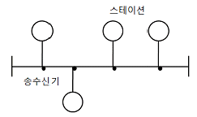
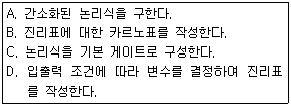
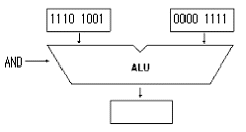
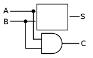
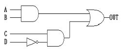
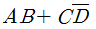
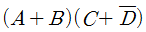
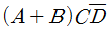
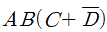
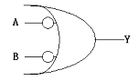

전자계산기기능사 (2015-01-25 기출문제)
1과목: 전기전자공학
1. 부궤환 증폭기의 특징으로 옳지 않은 것은?
- 종합 이득 향상
- 안정도 개선
- 주파수 특성 향상
- 파형 찌그러짐 감소
(정답률: 55%)

2. 초속도가 0 인 전자가 250[V]의 전위차로 가속되었을 때 전자의 속도는 약 몇 [m/s]인가?(단, 전자의 질량 m=9.1×10-31[Kg] 이고, 전자의 전하량 e =1.602×10-19[C] 이다.)
- 9.38×105[m/s]
- 9.38×106[m/s]
- 7.29×105[m/s]
- 7.29×106[m/s]
(정답률: 61%)
3. 차동증폭기에서 동위상제거비(CMRR)가 어떻게 변할 때 우수한 평형 특성을 가지는가?
- 차동 이득과 동위상 이득이 클수록 좋다.
- 차동 이득과 동위상 이득이 작을수록 좋다.
- 차동 이득이 작고 동위상 이득은 클수록 좋다.
- 차동 이득이 크고 동위상 이득은 작을수록 좋다.
(정답률: 49%)
4. 입력신호의 정(+), 부(-)의 피크(peak)를 어느 기준레벨로 바꾸어 고정시키는 회로는?
- 클리핑 회로(clipping circuit)
- 비교 회로(comparing circuit)
- 클램핑 회로(clamping circuit)
- 리미터 회로(limiter circuit)
(정답률: 64%)
5. 10[Ω]의 저항 10개를 이용하여 얻을 수 있는 가장 큰 합성저항 값은?
- 1[Ω]
- 10[Ω]
- 50[Ω]
- 100[Ω]
(정답률: 80%)
6. 실리콘(Si) 트랜지스터의 순방향 바이어스 전압은 대략 몇 [V] 정도인가?
- 1~2[V]
- 2~5[V]
- 0.2~0.3[V]
- 0.6~0.7[V]
(정답률: 57%)
7. 홀 효과(hall effect)에 대한 설명으로 옳은 것은?
- 전류와 자기장으로 기전력 발생
- 빛과 자기장으로 기전력 발생
- 자기 저항 소자
- 광전도 소자
(정답률: 53%)
8. 다이오드를 사용한 브리지정류회로는 주로 어떤 정류회로인가?
- 반파 정류회로
- 전파 정류회로
- 배전압 정류회로
- 정전압 정류회로
(정답률: 42%)
9. 비안정 멀티바이브레이터 회로에서 펄스 폭이 1[sec], 반복주기가 5[sec]일 때 반복 주파수는 몇[Hz]인가?
- 0.2[Hz]
- 0.5[Hz]
- 1.0[Hz]
- 5.0[Hz]
(정답률: 61%)
10. 트랜지스터를 활성영역에서 사용하고자 할 때 E-B 접합부와 C-B접합부의 바이어스는 어떻게 공급하여야 하는가?
- E-B : 순바이어스, C-B : 순바이어스
- E-B : 순바이어스, C-B : 역바이어스
- E-B : 역바이어스, C-B : 순바이어스
- E-B : 역바이어스, C-B : 역바이어스
(정답률: 62%)
2과목: 전자계산기구조
11. 컴퓨터 내부에서 음수를 표현하는 방법이 아닌 것은?
- 부호와 절대값
- 부호와 1의 보수
- 부호와 상대값
- 부호와 2의 보수
(정답률: 75%)
12. 입력 단자에 나타난 정보를 코드화 하여 출력으로 내보내는 것으로 해독기와 정반대의 기능을 수행하는 것은?
- 멀티플렉서(Mulyiplexer)
- 플립플롭(Flip-Flop)
- 가산기(Adder)
- 부호기(Encoder)
(정답률: 74%)
13. 제어장치의 PC(Program Counter)에 대한 설명으로 가장 적합한 것은?
- 기억레지스터의 명령 코드를 기억한다.
- 다음에 실행될 명령어의 번지를 기억한다.
- 주기억장치에 있는 명령어를 임시로 기억한다.
- 명령 코드를 해독하여 필요한 신호를 발생시킨다.
(정답률: 61%)
14. 국제표준기구에서 개발되고 미국 국립 표준 연구소에 의해 제정된 코드로서, 3개의 ZONE비트와 4개의 DIGIT비트로 구성되는 것은?
- GRAY 코드
- EBCDIC 코드
- 표준 BCD 코드
- ASCII 코드
(정답률: 79%)
15. 2진수 1001과 0011을 더하면 그 결과는 2진수로 얼마인가?
- 1110
- 1101
- 1100
- 1001
(정답률: 73%)
16. 근거리 통신망의 구성 중 회선 형태의 케이블에 송.수신기를 통하여 스테이션을 접속하는 것으로 그림과 같은 것은?

- 성(Star)형
- 루프(Loop)형
- 버스(Bus)형
- 그물(Mesh)형
(정답률: 86%)
17. 연산 결과의 상태를 기록, 자리 올림 및 오버플로우 발생 등의 연산에 관계되는 상태와 인터럽트 신호까지 나타내어 주는 것은?
- 누산기
- 데이터 레지스터
- 가산기
- 상태 레지스터
(정답률: 59%)
18. 조합논리회로를 설계할 때 일반적인 순서로 옳은 것은?

- D-B-A-C
- D-A-B-C
- B-D-A-C
- B-D-C-A
(정답률: 71%)
19. 프로그램 수행 중 서브루틴(Sub-Routine)으로 돌입할 때 프로그램의 리턴 번지(Return Address)의 수를 LIFO(Last-In-First-Out) 기술로 메모리의 일부에 저장한다. 이 메모리와 가장 밀접한 자료 구조는?
- 큐
- 트리
- 스택
- 그래프
(정답률: 73%)
20. 출력 장치가 아닌 것은?
- 모니터
- 스캐너
- 프린터
- 플로터
(정답률: 73%)
21. 네온, 아르곤 등의 혼합가스를 셀(Cell)에 채워 높은 전압을 가할 때 나오는 빛을 이용한 출력 장치는?
- 음극선과(CRT)
- X-Y 플로터(X-Y Plotter)
- 플라즈마 디스플레이(Plasma Display)
- 액정 디스플레이(Liauid Crystal Display)
(정답률: 79%)
22. 다음 중 자기 보수(self complement) 코드는?
- 해밍 코드
- 그레이 코드
- BCD 코드
- 3초과 코드
(정답률: 55%)
23. 프로그램 실행 중에 강제적으로 제어를 특정 주소로 옮기는 것으로 프로그램의 실행을 중단하고 그 시점에서의 주요 데이터를 주기억장치로 되돌려 놓은 다음 특정 주소로부터 시작되는 프로그램에 제어를 옮기는 것은?
- 타이밍 제어
- 인터럽트
- 메모리 매핑
- 마이크로 오퍼레이션
(정답률: 71%)
24. 전자계산기나 단말 장치의 출력단에서 직류 신호를 교류신호로 변환하거나 또는 거꾸로 전송되어 온 교류 신호를 직류 신호로 변환해 주는 장치는?
- MODEM
- DSU
- BPS
- PCM
(정답률: 75%)
25. 주소의 개념이 거의 사용되지 않는 보조기억장치로서 순서에 의해서만 접근하는 기억장치(SASD)라고도 하는 것은?
- Magnetic Tape
- Magnetic Disk
- Magnetic Core
- RAM
(정답률: 72%)
26. 오퍼랜드부에 표현된 주소를 사용하여 실제 데이터가 기억된 기억장소에 직접 사상시킬 수 있는 주소지정방식은?
- direct addressing
- indirect addressing
- immediate addressing
- register addressing
(정답률: 54%)
27. 다음 그림의 연산 결과를 올바르게 나타낸 것은?

- 10011001
- 00001001
- 10101111
- 10001001
(정답률: 78%)
28. 산술 연산에 해당하지 않는 것은?
- DIVIDE
- SUBTRACT
- ADD
- AND
(정답률: 73%)
29. 명령을 수행하는 연산기와 레지스터, 이들에 의해 명령이 수행되도록 제어하는 제어기, 장치 상호간에 신호의 전달을 위한 신호 회선인 내부 버스로 구성되어 있으며, 기억장치에 있는 명령어를 해독하여 실행하는 것은?
- 모니터
- 어셈블러
- CPU
- 컴파일러
(정답률: 57%)
30. 다음 중 최대 클록 주파수가 가장 높은 논리 소자는?
- TTL
- ECL
- MOS
- CMOS
(정답률: 67%)
3과목: 프로그래밍일반
31. 로더의 기능으로 거리가 먼 것은?
- Allocation
- Linking
- Loading
- Translation
(정답률: 68%)
32. 객체지향 기법에서 하나 이상의 유사한 객체들을 묶어서 하나의 공통된 특성을 표현한 것은?
- 클래스
- 메시지
- 메소드
- 속성
(정답률: 63%)
33. 운영체제의 성능 평가 기준으로 거리가 먼 것은?
- Throughput
- Reliability
- Cost
- Availability
(정답률: 71%)
34. C 언어에서 사용되는 자료형이 아닌 것은?
- double
- float
- char
- integer
(정답률: 60%)
35. 구조적 프로그래밍의 특징으로 거리가 먼 것은?
- 기능별로 모듈화하여 작성한다.
- GOTO문의 활용이 증가한다.
- 프로그램을 읽기 쉽고 수정하기가 용이하다.
- 기본 구조는 순차, 선택, 반복 구조이다.
(정답률: 73%)
36. 프로그래밍 언어의 구문 요소 중 프로그램의 이해를 돕기 위해 설명을 적어두는 부분으로 프로그램의 실행과는 관계가 없고, 프로그램의 판독성을 향상시키는 요소는?
- Comment
- Reserved Word
- Operator
- Key Word
(정답률: 66%)
37. 프로그래머가 작성한 것으로 기계어로 번역되기 전의 프로그램은?
- 원시 프로그램
- 목적 프로그램
- 루트 프로그램
- 해석 프로그램
(정답률: 75%)
38. 연상기호 코드를 사용하는 프로그래밍 언어는?
- C
- PASCAL
- COBOL
- ASSEMBLY
(정답률: 46%)
39. 운영체제의 기능이 아닌 것은?
- 프로세서, 기억장치, 입/출력장치, 파일 및 정보 등의 자원 관리
- 시스템의 각종 하드웨어와 네트워크에 대한 관리,제어
- 원시 프로그램에 대한 목적 프로그램 생성
- 사용자와 시스템간의 인터페이스 기능
(정답률: 71%)
40. 순서도에 대한 설명으로 거리가 먼 것은?
- 프로그램 개발 비용을 산출하는 역할을 한다.
- 프로그램 인수 인계시 문서 역할을 할 수 있다.
- 프로그램의 오류수정을 용이하게 해준다.
- 프로그램에 대한 이해를 도와준다.
(정답률: 66%)
4과목: 디지털공학
41. 여러 진법으로 표현된 다음 수 중 가장 큰 것은?
- (114)10
- (156)8
- 11011102
- (6F)16
(정답률: 48%)
42. Y=(A+B)(A+C)의 최소화로 옳은 것은?
- Y+A+B+C
- Y=A+BC
- Y=B+AC
- Y=AB+C
(정답률: 76%)
43. 반가산기의 구성에서 빈 칸에 적합한 것은?

- NOT
- NAND
- XOR
- OR
(정답률: 61%)
44. 논리식을 최소화 하는 방법으로 가장 적절한 것은?
- 가법 표준형
- 카르노 맵
- 승법 표준형
- venn diagram
(정답률: 85%)
45. RS 플립플롭의 R선에 인버터를 추가하여 S선과 하나로 묶어서 입력선을 하나만 구성한 플립플롭은?
- JK 플립플롭
- T 플립플롭
- 마스터-슬레이브 플립플롭
- D 플립플롭
(정답률: 45%)
46. 2진수 1101을 그레이 코드로 바꾸면?
- 1011
- 0010
- 1000
- 1100
(정답률: 72%)
47. 그림과 같은 회로의 출력은?





(정답률: 65%)
48. 어떤 연산의 수행 후 연산 결과를 일시적으로 보관하는 레지스터는?
- Address register
- Buffer register
- Data register
- Accumulator
(정답률: 69%)
49. 안정된 상태가 없는 회로이며, 직사각형파 발생회로 또는 시간 발생기로 사용되는 회로는?
- 비안정 멀티바이브레이터
- 플립플롭
- 쌍안정 멀티바이브레이터
- 단안정 멀티바이브레이터
(정답률: 70%)
50. 펄스가 입력되면 현재와 반대의 상태로 바뀌게 하는 토글(toggle)상태를 만드는 것은?
- D 플립플롭
- 마스터-슬레이브 플립플롭
- T 플립플롭
- JK 플립플롭
(정답률: 72%)
51. 동기식 9진 카운터를 만드는데 필요한 플립플롭의 개수로 옳은 것은?
- 1개
- 2개
- 3개
- 4개
(정답률: 62%)
52. 여러 회선의 입력이 한 곳으로 집중될 때 특정회선을 선택하도록 하므로 선택기라고도 하는 회로는?
- 리플 계수기(ripple counter)
- 디멀티플렉서(demultiplexer)
- 멀티플렉서(mulyiplexer)
- 병렬계수기(parallel counter)
(정답률: 60%)
53. 불 대수의 정리에서 옳지 않은 것은?
- A+0=A
- A+B=B+A
- Aㆍ(BㆍC)=(AㆍB)ㆍC
- Aㆍ1=1
(정답률: 70%)
54. 카운터와 같이 플립플롭을 사용하는 디지털 회로를 무엇이라고 하는가?
- 조합논리회로
- 아날로그 논리회로
- 순서논리회로
- 멀티플렉서 논리회로
(정답률: 52%)
55. 디지털 시스템에서 사용되는 2진 코드를 우리가 쉽게 인지할 수 있는 숫자나 문자로 변환해 주는 회로는?
- 인코더 회로
- 플립플롭 회로
- 전가산기 회로
- 디코더 회로
(정답률: 52%)
56. 디지털 신호를 아날로그 신호로 변환하는 장치는?
- A/D 변환기
- D/A 변환기
- 해독기(decoder)
- 비교 회로
(정답률: 85%)
57. 시프트 레지스터의 출력을 입력쪽에 되먹임 시킴으로써. 클록 펄스가 가해지는 동안 같은 2진수가 레지스터 내부에서 순환하도록 만든 것으로서 환상 계수기라고도 부르는 것은?
- 링 계수기
- 시프트 계수기
- 2bit 시프트 레지스터
- 직렬 시프트 레지스터
(정답률: 60%)
58. 다음 기호와 동일한 게이트 명칭은?

- OR
- AND
- NAND
- NOR
(정답률: 48%)
59. 2진수 11001001의 1의 보수와 2의 보수는?
- 1의 보수: 11001000, 2의 보수: 11001001
- 1의 보수: 00110111, 2의 보수: 00110110
- 1의 보수: 00110110, 2의 보수: 00110110
- 1의 보수: 00110110, 2의 보수: 00110111
(정답률: 72%)
60. 계수기에서 가장 기본이 되는 계수기로서, 흔히 리플 계수기라고도 불리는 것은?
- 상향 계수기
- 하향 계수기
- 동기형 계수기
- 비동기형 계수기
(정답률: 56%)
부궤환 증폭기는 입력 신호를 증폭하여 출력하는 역할을 합니다. 이 때, 주파수 특성을 향상시키고 파형 찌그러짐을 감소시키는 등의 기능을 가지며, 안정도를 개선시키는 특징을 가지고 있습니다. 하지만 부궤환 증폭기는 출력 신호가 입력 신호보다 더 크게 증폭되므로, 종합 이득이 향상되는 것은 아닙니다.